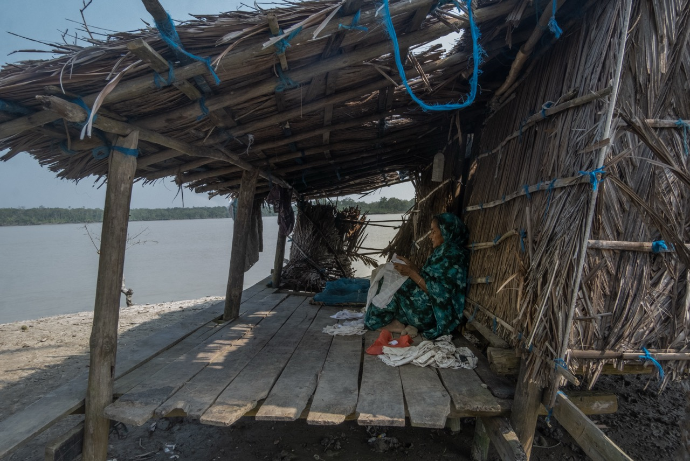
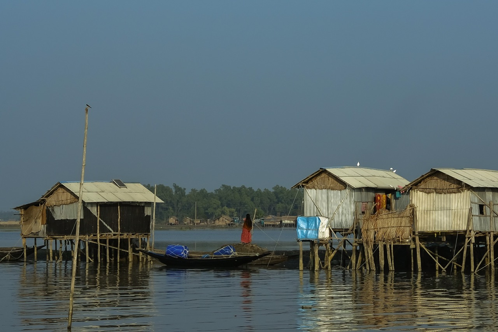

Photography
The coast behind the data
I photograph the southwest coast of Bangladesh, where I grew up and where I now do fieldwork. Salinity, cyclones and dry seasons shape how people live there, and much of it is invisible in water-quality data. Photography lets me record what the numbers leave out.
Featured
 Add assets/photos/once-there-was-a-home.jpg
Add assets/photos/once-there-was-a-home.jpg
Photo documentary
Bearing the Burnt





Recognition
Vice President, BUET Photographic Society
2024 – 2025Led photowalks and critiques; curated a campus exhibition.
Workshop instructor
University of Asia Pacific (2025) and BUET Photographic Society (2024). Details in CV
More work
A wider selection is on Instagram.